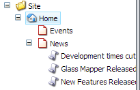
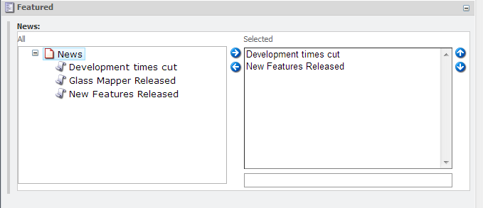
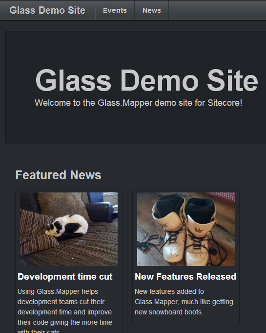

In this tutorial we will look at the more complex field types, we will look at how we can use a Tree List and and Image field.
We are going to update our home page to contain a list of featured news articles. Beneath the news item I have create a few news articles:
A news article has the following fields:
The model for out News Article looks like this:
Notice that for the FeaturedImage field we use the a special Glass.Mapper type Glass.Mapper.Sc.Fields.Image. There are variety of different field types for handling the more complex field types in the Glass.Mapper.Sc.Fields namespace.
The configuration for the news article is straight forward:
We now need to update the home page to have the additonal featured news field:
Now we need to update our home page model to contain a property that can contain a list of news articles:
Finally we have to update our config to map the new field:
Notice that to map a tree list we just made a property that contains the type we want to load the target items as and simply update the configuration.
All that remains to be done is updating the ASCX page to render out the selected news articles:
If we compile and run the website we should see that our featured articles and images render nicely below the hero unit:
That completes this tutorial, you have seen how you can use an image field and also load items linked via fields.